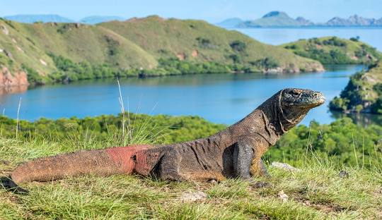

Tempat Wisata di Nusa Tenggara Timur yang Indah Penuh Pesona
-
Pantai Pink
Pantai Pink merupakan pantai dengan pasir putih yang berwarna kemerah-merahan karena perpaduan antara warna putih dengan warna merah sehingga pasir di pantai Pink mirip dengan warna merah muda (Pink), sebab itulah pantai ini dinamakan pantai Pink. Ada beberapa alasan wisatawan lebih memilih pantai Pink sebagai tempat wisata bahari di pulau Lombok, alasan utama wisatawan berkunjung ke pantai Pink untuk melihat keindahan pasir pantai Pink yang berwarna mirip dengan warna merah muda (pink). Warna pasir di pantai yang satu ini memang beda dengan warna pasir di pantai lain di pulau Lombok, sehingga salah satu kelainan inilah yang menjadi kelebihan dari pantai yang satu ini dalam memikat wisatawan untuk berkunjung. Warna pink pada pasir pantai ini sangat bervariasi, pagi hari 20-30%, siang hari 50% dan semakin sore, warnanya pun akan terlihat jelas, antara 80-90 %. Wah sungguh sangat menawan. Alasan selanjutnya adalah laut di pantai Pink masih jernih sehingga saat naik sampan dapat melihat keindahan bawah laut dari atas permukaan air laut. Bagi kamu yang suka mandi air laut, disini juga salah satu tempat yang menarik untuk main air laut di pesisir pantai, apalagi bagi yang suka mandi air laut.
-

Pulau Komodo
Pulau Komodo adalah sebuah pulau yang terletak di Kepulauan Nusa Tenggara, berada di sebelah timur Pulau Sumbawa, yang dipisahkan oleh Selat Sape. Pulau Komodo dikenal sebagai habitat asli hewan komodo. Pulau ini termasuk salah satu kawasan Taman Nasional Komodo yang dikelola oleh Pemerintah Pusat. Secara administratif, pulau ini termasuk wilayah Kabupaten Manggarai Barat, Kecamatan Komodo, Provinsi Nusa Tenggara Timur, Indonesia. Pulau Komodo merupakan ujung paling barat Provinsi Nusa Tenggara Timur, berbatasan dengan Provinsi Nusa Tenggara Barat. Di Pulau Komodo, hewan komodo hidup dan berkembang biak dengan baik. Hingga Agustus 2009, di pulau ini terdapat sekitar 1300 ekor komodo. Ditambah dengan pulau lain, seperti Pulau Rinca dan dan Gili Motang, jumlah mereka keseluruhan mencapai sekitar 2500 ekor. Ada pula sekitar 100 ekor komodo di Cagar Alam Wae Wuul di daratan Pulau Flores tapi tidak termasuk wilayah Taman Nasional Komodo. Selain komodo, pulau ini juga menyimpan eksotisme flora yang beragam kayu sepang yang oleh warga sekitar digunakan sebagi obat dan bahan pewarna pakaian, pohon nitak ini atau sterculia oblongata di yakini berguna sebagai obat dan bijinya gurih dan enak seperti kacang polong. Pulau Komodo juga diterima sebagai Situs Warisan Dunia UNESCO, karena dalam wilayah Taman Nasional Komodo, bersama dengan Pulau Rinca, Pulau Padar dan Gili Motang
-

Pulau Flores
erwisata ke Pulau Flores selain dimanjakan dengan pesona alam yang begitu indah, kita juga dapat menikmati wisata sejarah perjalanan berdirinya Indonesia. Rumah pengasingan Bung Karno selama di Kota Ende dapat kita jumpai masih berdiri kokoh di Jalan Perwira. Tidak jauh dari tempat tersebut, tepatnya diKelurahan Rukun Lima kita akan melihat Patung Bung Karno yang terlihat sedang duduk termenung dibawah pohon Sukun dengan menghadap ke Laut. Patung tempat Bung Karno duduk tersebut dikenal dengan nama lapangan Pancasila. Berada didaerah tersebut mulai dari rumah pengasingan hingga lapangan pancasila seakan membawa kita untuk melihat dengan jelas gigihnya para pendiri bangsa memperjuangkan cita-cita kemerdekaan bangsa. Puas bernostalgia dengan sejarah perjuangan bangsa, kita dapat berpindah ke objek wisata alam tepatnya di Danau Kelimutu. Danau yang terletak di Desa Pemo, Kecamatan Kelimutu, Kabupaten Ende tersebut sangat terkenal dengan nama Danau tiga warna, karena mempunyai tiga warna yang berbeda yaitu Merah, Biru dan Putih. Seiring dengan berjalanya waktu, warna danau tersebut selalu berubah-ubah. Pada tahun 1992, keindahan Danau Kelimutu pernah diabadikan dalam mata uang pecahan Rp.5000.
-

Pulau Padar
Pulau Padar adalah pulau ketiga terbesar di kawasan Taman Nasional Komodo, setelah Pulau Komodo dan Pulau Rinca.[1] Pulau ini relatif lebih dekat ke Pulau Rinca dari pada ke Pulau Komodo, yang dipisahkan oleh Selat Lintah. Di sekitar pulau ini terdapat pula tiga atau empat pulau kecil. Pulau Padar juga diterima sebagai, situs Warisan Dunia UNESCO, karena berada di dalam wilayah Taman Nasional Komodo, bersama dengan Pulau Komodo, Pulau Rinca, dan Gili Motang. Pulau Padar tidak dihuni oleh komodo lantaran rantai makanan yang teputus. Jenis-jenis reptil di Pulau padar diantaranya ular cincin mas (Bioga Dendrophylla), biawak, tokek, dan ular hijau.[2][3] Laut di sekitar pulau memiliki beberapa lokasi yang populer untuk scuba diving dan snorkelling.
-
Gunung Kelimutu
Gunung Kelimutu adalah gunung berapi yang terletak di Pulau Flores, Provinsi Nusa Tenggara Timur. Lokasi gunung ini tepatnya di Desa Pemo, Kecamatan Kelimutu, Kabupaten Ende. Gunung ini memiliki tiga buah danau. kawah di puncaknya. Danau ini dikenal dengan nama Danau Tiga Warna karena memiliki tiga warna yang berbeda, yaitu merah, biru, dan putih. Walaupun begitu, warna-warna tersebut selalu berubah-ubah seiring dengan perjalanan waktu. Kelimutu merupakan gabungan kata dari "keli" yang berarti gunung dan kata "mutu" yang berarti mendidih. Menurut kepercayaan penduduk setempat, warna-warna pada danau Kelimutu memiliki arti masing-masing dan memiliki kekuatan alam yang sangat dahsyat. Danau atau Tiwu Kelimutu di bagi atas tiga bagian yang sesuai dengan warna - warna yang ada di dalam danau. Danau berwarna biru atau "Tiwu Nuwa Muri Koo Fai" merupakan tempat berkumpulnya jiwa-jiwa muda-mudi yang telah meninggal. Danau yang berwarna merah atau "Tiwu Ata Polo" merupakan tempat berkumpulnya jiwa-jiwa orang yang telah meninggal dan selama ia hidup selalu melakukan kejahatan/tenung. Sedangkan danau berwarna putih atau "Tiwu Ata Mbupu" merupakan tempat berkumpulnya jiwa-jiwa orang tua yang telah meninggal. Para penduduk di sekitar Danau Kelimutu percaya, bahwa pada saat danau berubah warna, mereka harus memberikan sesajen bagi arwah orang - orang yang telah meninggal. Luas ketiga danau itu sekitar 1.051.000 meter persegi dengan volume air 1.292 juta meter kubik. Batas antar danau adalah dinding batu sempit yang mudah longsor. Dinding ini sangat terjal dengan sudut kemiringan 70 derajat. Ketinggian dinding danau berkisar antara 50 sampai 150 meter.
-
Desa Wae Rebo
Desa wisata Waerebo terletak di Desa Satar Lenda, Kecamatan Satar Mese Barat, berabatasan langsung dengan Taman Nasional Komodo. Berada sekitar 1.100 mdpl, Waerebo merupakan sebuah desa terpencil yang dikelilingi pegunungan dan panorama hutan tropis lebat di Kabupaten Manggarai, Pulau Flores. Waerebo kini telah tumbuh menjadi tujuan favorit untuk ekowisata. Pada Agustus 2012 Kampung adat Waerebo meraih Award of Excellence, anugerah tertinggi dalam UNESCO Asia-Pacific Awards for Heritage Conservation 2012 di Bangkok Kampung adat Waerebo sering juga disebut surga diatas awan, menawarkan keindahan alam dan aristektur rumah adat berbentuk kerucut yang sangat unik, dalam bahasa lokal menyebutnya Mbaru Niang
-
Pantai nemberala
Pantai Nembrala yang terletak di Desa Nembrala, Kecamatan Rote Barat, Kabupaten Rote Ndao, Nusa Tenggara Timur. Selain memiliki pantai dan pasir putih yang indah, gulungan ombak Pantai Nembrala juga sudah mendunia. Karena itulah, setiap musim ombak (bulan Agustus-Oktober) tiba di Pantai Nembrala dan Bo’a biasanya diadakan event olah raga surfing baik regional maupun berkelas internasional. Pada waktu tersebut, Pantai Nembrala akan terlihat sangat ramai sekali oleh para peselancar dari berbagai negara yang hendak mencoba menantang gulungan ombaknya yang terkenal itu. Pantai Nembrala juga sangat terkenal sebagai penghasil rumput laut terbesar di Pulau Rote Ndao. Saat menjelang sore haripun, pengunjung juga dapat menyaksikan keindahan momen matahari tenggelam sambil melihat aktivitas para petani rumput laut yang semakin menambah keelokan Pantai Nembrala. Akses Menuju Lokasi Wisata Akses perjalanan menuju Pulau Rote dari Kota Kupang dapat ditempuh melalui jalur udara dan laut, dengan penjelasan detail sebagai berikut: 1. Via udara, pengunjung dapat menggunakan pesawat dari Bandara El Tari Kupang ke Bandara Lekunik Rote, menggunakan maskapai yang melayani rute Kupang-Rote-Kupang yaitu Trans Nusa dan Susi Air, dengan biaya sekitar 200-300an ribu rupiah untuk sekali penerbangan. Untuk jadwalnya yaitu seminggu 3 kali yakni Senin, Rabu dan Jum’at/ Sabtu (jadwal dapat berubah tergantung situasi dan kondisi cuaca). 2. Sedangkan via lautnya terdapat 2 pilihan alternatif kapal yaitu menggunakan kapal lambat (ferry) dan kapal cepat (speed boat). Apabila pengunjung memilih menggunakan kapal ferry, waktu pemberangkatannya yaitu pukul 08.00 WITA dari Pelabuhan Bolok, Kupang dan kemudian berlabuh di Pelabuhan Pantai Baru, Rote. Waktu penyeberangan memakan waktu tempuh hinga 3-4jam (tergantung cuaca dan kondisi laut). Biaya penyebrangan kapal ferry reguler Kupang-Rote yaitu sebesar 54.000 rupiah per orangnya. Bagi pengunjung yang hendak membawa kendaraan sepeda motor dari Kupang, akan dikenakan biaya sebesar 116.000 rupiah (untuk biaya 1 orang dan 1 sepeda motor). Dan bagi yang memilih alternatif kapal cepat berangkatnya yakni dari Pelabuhan Tenau, Kupang dengan waktu keberangkatan pukul 08.00 WITA. Perjalanan dengan kapal cepat memakan waktu sekitar 1.5-2 jam lamanya tergantung kondisi angin dan gelombang di laut. Biaya tiket kapal cepat sekitar 160.000 rupiah untuk kelas ekonomi dan 190.000 rupiah untuk kelas bisnisnya.